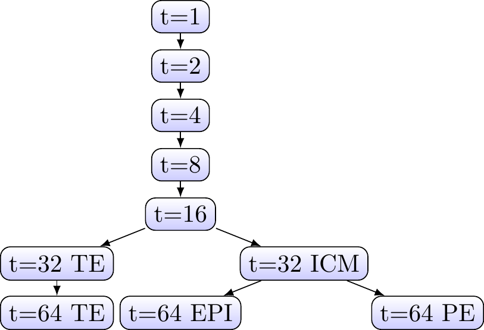
Gaussian Process Latent Variable Models
Overview
- Motivation.
- Principal component analysis.
- Gaussian process latent variable models.
- Applications.
Motivation
- Data is often high dimensional.
- In theory, in high dimensions we need a lot of data to learn anything (curse of dimensionality).
- Often the data actually lies on a lower dimensional manifold.
- This means we can use useful representations from relatively small amounts of data.
Motivation
We want to learn a mapping from low dimensional space to a high dimensional space
\[
h \in \mathbb{R}^Q \mapsto y \in \mathbb{R}^D
\]
where \(y\) is observed, \(h\) is an unobserved latent variable, and \(D > Q\).
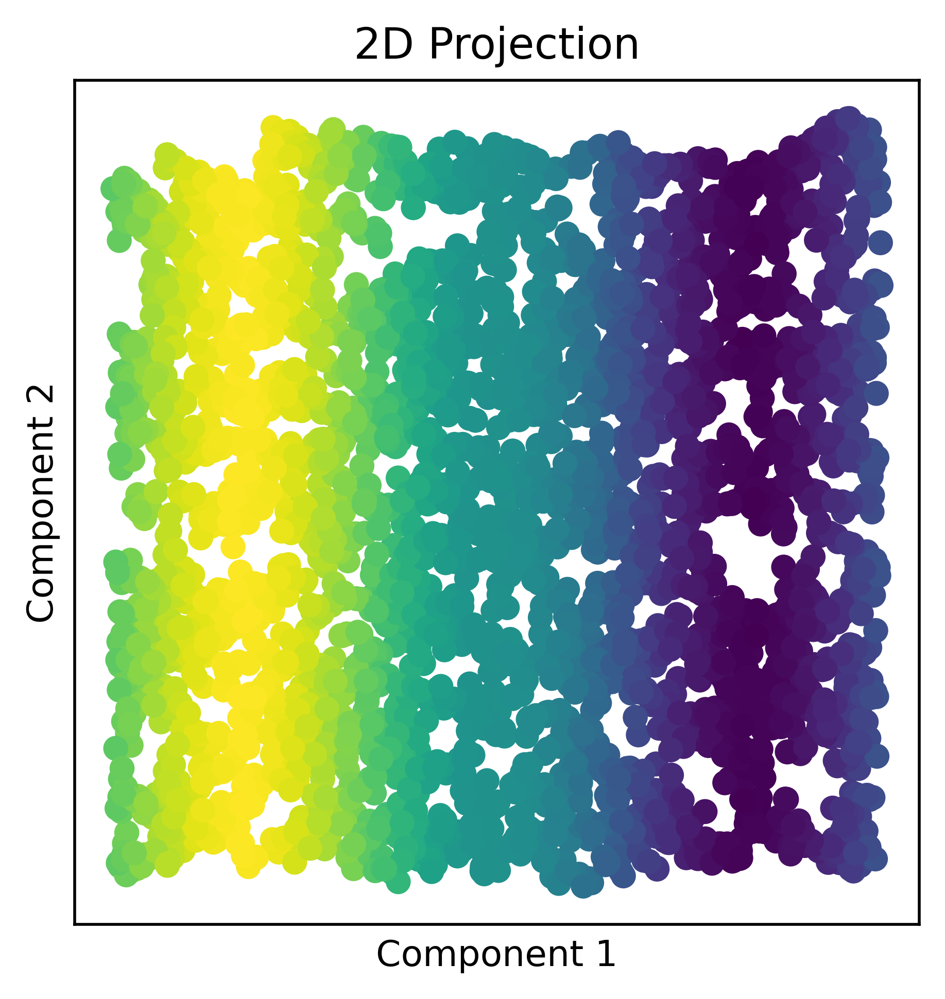
→
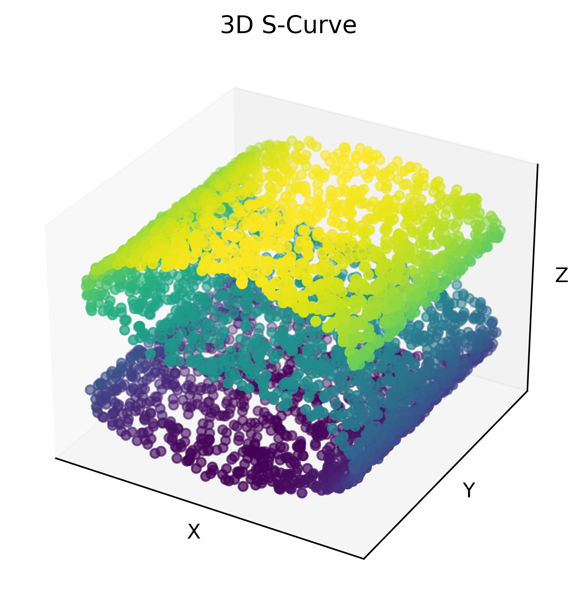
Motivating Example
- Simulated Dataset, with 12 spatial dimensions, of pipeline transporting a mix of oil, water and gas1.
| 0 | 1 | 2 | 3 | 4 | 5 | 6 | 7 | 8 | 9 | 10 | 11 | |
|---|---|---|---|---|---|---|---|---|---|---|---|---|
| 0 | 0.6022 | 0.4851 | 0.9271 | 0.4647 | 1.1818 | 0.3103 | 1.7287 | 0.0006 | 2.1438 | -0.1692 | 0.0210 | 1.7062 |
| 1 | 0.7532 | 0.3612 | 0.3635 | 1.0189 | 0.3685 | 0.5868 | 0.3342 | 1.0666 | 0.2891 | 0.6552 | 0.3743 | 1.0184 |
| 2 | 0.5023 | 0.2296 | 0.8095 | 0.3391 | 0.8645 | 0.4546 | 0.7044 | 0.4620 | 0.8431 | 0.5025 | 0.7605 | 0.3984 |
| … | … | … | … | … | … | … | … | … | … | … | … | … |
- The flow in the pipe takes one of the three flow configurations: horizontally stratified, nested annular or homogeneous mixture flow.
- However, the data is inherently two dimensional as the flow is determined by the fractions of water and oil (fraction of air is then determined as it must sum to one).
Principal Component Analysis
Can we learn a low dimensional representation of this data?
- For a dataset \(Y = [\mathbf{y}_1, ..., \mathbf{y}_N]^T\), \(\mathbf{y}_n \in \mathbb{R}^{D}\),
- We assume a linear mapping: \[\mathbf{y}_n = \mathbf{W}\mathbf{h}_n,\] where \(\mathbf{y}_n \in \mathbb{R}^D\) is the observed data, \(\mathbf{h}_n \in \mathbb{R}^Q\) is the corrosponding latent point and \(\mathbf{W} \in \mathbb{R}^{D \times Q}\) is a linear mapping.
- \(\mathbf{W}\) can be calculated in closed form by finding the eigenvalues and vectors of the covariance matrix \(cov(\mathbf{Y},\mathbf{Y}).\)
But real data is noisy…
Probabilistic Principal Component Analysis
- In Probabilistic PCA we assume the data in noisy:
\[ \mathbf{y}_n = \mathbf{W}\mathbf{h}_n + \epsilon_n, \]
- where \(\epsilon_n\) is a Gaussian noise term with variance \(\sigma^2\):
\[ \epsilon_n \sim \mathcal{N}(\epsilon_n| \mathbf{0}, \sigma^2\mathbf{I}). \]
- This gives us the likelihood:
\[ p(\mathbf{y}_n |\mathbf{h}_n, \mathbf{W}, \sigma^2) = \mathcal{N}(\mathbf{y}_n | \mathbf{W}\mathbf{h}_n, \sigma^2\mathbf{I}). \]
Probabilistic Principal Component Analysis
Normally in PPCA, the latents are marginalised out by applying the prior \(p(\mathbf{h}_n) = \mathcal{N}(\mathbf{0}, \mathbf{I})\), giving a marginal likelihood of:
\[\begin{align*} p(\mathbf{y}_n | \mathbf{h}_n, \mathbf{W}, \sigma^2) & = \int p(\mathbf{y}_n |\mathbf{h}_n, \mathbf{W}, \sigma^2)p(\mathbf{h}_n) d\mathbf{h}_n \\ & = \mathcal{N}(\mathbf{y}_n | \mathbf{0}, \mathbf{W}\mathbf{W}^T + \sigma^2\mathbf{I}). \end{align*}\]
- However, we can instead marginalise out \(\mathbf{W}\) using the prior:
\[p(\mathbf{W}) = \prod_{i=1}^D\mathcal{N}(\mathbf{w_i}|\mathbf{0}, \mathbf{I}).\]
Probabilistic Principal Component Analysis
- For a set of data points \(Y = [\mathbf{y}_1, ..., \mathbf{y}_N]^T\) and corropsonding latent variables \(H=[\mathbf{h}_1, ..., \mathbf{h}_N]^T\), using this prior allows the marginal likelihood to take the form: \[p(Y|\mathbf{H}, \sigma^2) = \prod_{i=1}^D p(\mathbf{y}_{:,d}|\mathbf{H}, \sigma^2),\] where: \[p(\mathbf{y}_{:,d} |\mathbf{h}_{:,d}, \sigma^2) = \mathcal{N}(\mathbf{y}_{:,d} | \mathbf{0}, \mathbf{H}\mathbf{H}^T + \sigma^2\mathbf{I}).\]
- We can then get \(\mathbf{W}\) by optimising this marginal likelihood.
Probabilistic Principal Component Analysis
Probabilistic Principal Component Analysis gives us a linear mapping \(\mathbf{h} \mapsto \mathbf{y}\).
Is there a way we can learn more complex mappings?
Gaussian Process Latent Variable Model 1
- We can use a Gaussian process model but this time the inputs \(\mathbf{H}=[\mathbf{h}_1, ..., \mathbf{h}_N]^T\) are not observed.
- The outputs \(\mathbf{Y} = [\mathbf{y}_1, ..., \mathbf{y}_N]^T\) are observed.
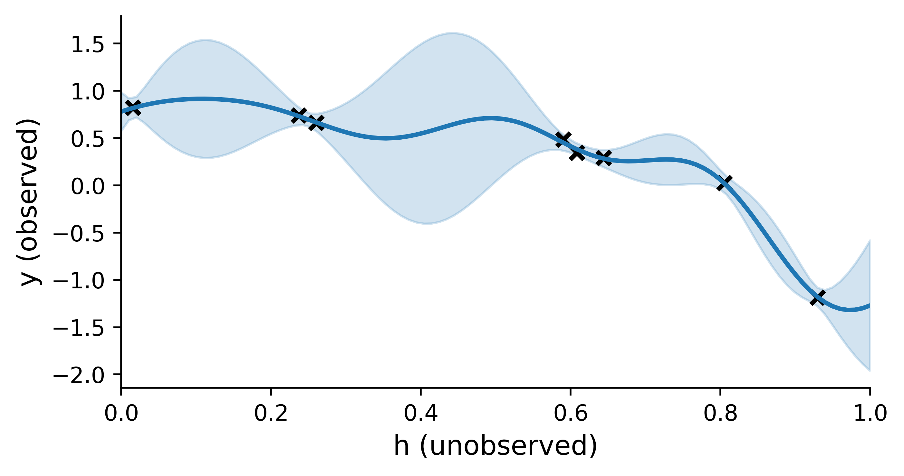
- This gives us the generative model:
\[ \mathbf{y} = f(\mathbf{h}) + \mathbf{\epsilon} ~~~~ f \sim \mathcal{GP}(\mathbf{0}, k(\mathbf{h}, \mathbf{h})) ~~~~\mathbf{\epsilon} \sim \mathcal{N}(0, \sigma_n^2). \]
- \(\mathbf{h}_n \in \mathbb{R}^{Q}\) and \(\mathbf{y}_n \in \mathbb{R}^{D}\), \(D>Q\) and \(\sigma_n^2\) is the noise variance. Kernel \(k(\mathbf{h}, \mathbf{h})\) is parameterised by hyperparameters \(\mathbf{\theta}\).
Gaussian Process Latent Variable Model
- We find the optimal latent variables \(\mathbf{H}\), kernel hyperparameters \(\mathbf{\theta}\) and noise variance \(\sigma_n^2\) by optimising the log marginal likelihood.
- To do this we take the likelihood:
\[ p(\mathbf{Y}|\mathbf{F}, \mathbf{H}, \mathbf{\theta}, \sigma_n^2), \]
- and marginalize out the function values \(\mathbf{F}=f(\mathbf{H})\):
\[\begin{align*} p(\mathbf{Y}|\mathbf{H}, \mathbf{\theta}, \sigma_n^2) &= \int p(\mathbf{Y}|\mathbf{F}, \mathbf{H}, \mathbf{\theta}, \sigma_n^2) p(\mathbf{F}|\mathbf{H},\mathbf{\theta}) dF \\ & = \mathcal{N}(0, K(\mathbf{H}, \mathbf{H}) + \sigma_n^2 \mathbf{I}). \end{align*} \]
Gaussian Process Latent Variable Model
- This gives the log marginal likelihood: \[ \begin{align*} \log p(\mathbf{Y}|\mathbf{H}, \mathbf{\theta}, \sigma_n^2) = & - \underbrace{\frac{1}{2} \text{Tr}(K_H+\sigma_n^2\mathbf{I})^{-1}\mathbf{Y}\mathbf{Y}^T}_{\text{ data fit}} - \underbrace{\frac{D}{2} \log|K_H+\sigma_n^2\mathbf{I}| }_{\text{complexity penalty}} \\ & - \underbrace{\frac{D N}{2}\log 2 \pi}_{\text{norm. constant}}. \end{align*} \] where \(K_H=K(\mathbf{H},\mathbf{H})\).
Gaussian Process Latent Variable Model
- Our GPLVM marginal likelihood is:
\[\begin{align*} p(Y|H, \mathbf{\theta}, \sigma_n^2) = \mathcal{N}(0, K(H, H) + \sigma_n^2 \mathbf{I}). \end{align*} \]
- What does this look a lot like?
- Our PPCA marginal likelihood is:
\[p(Y|X, \sigma^2) = \prod_{i=1}^D p(\mathbf{y}_{:,d}|X, \sigma^2),\]
where: \[p(\mathbf{y}_n |\mathbf{h}_n, \sigma^2) = \mathcal{N}(\mathbf{y}_n | \mathbf{0}, \mathbf{H}\mathbf{H}^T + \sigma^2\mathbf{I}).\]
PPCA is equivalent to GPLVM with a linear kernel!
PPCA vs GPLVM
PPCA
Linear mapping
\[p(\mathbf{y}_n |\mathbf{h}_n, \sigma^2) = \mathcal{N}(\mathbf{y}_n | \mathbf{0}, \mathbf{H}\mathbf{H}^T + \sigma^2\mathbf{I}).\]
GPLVM
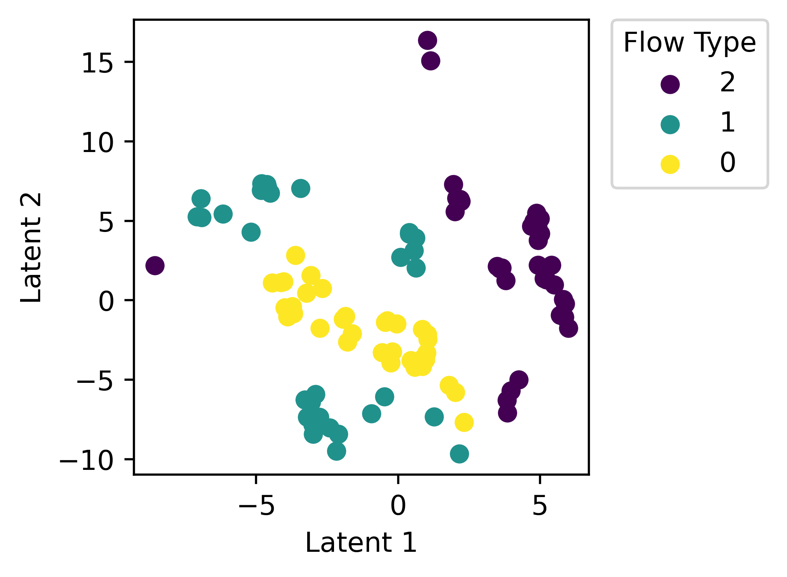
Non-linear mapping
\[\begin{align*} p(Y|H, \mathbf{\theta}, \sigma_n^2) = \mathcal{N}(0, K(\mathbf{H}, \mathbf{H}) + \sigma_n^2 \mathbf{I}). \end{align*} \]
Limitations of GPLVM
- There is no good way to choose the dimensions of the latent space \(Q\).
- Latent variables \(H\) are deterministic, which can lead to overfitting.
- There is a version of the GPLVM called the Bayesian GPLVM that addresses these issues.
GPLVM
Non-linear mapping
\[\begin{align*} p(Y|H, \mathbf{\theta}, \sigma_n^2) = \mathcal{N}(0, K(\mathbf{H}, \mathbf{H}) + \sigma_n^2 \mathbf{I}). \end{align*}\]
Use Cases
- Learning pseudo-time in single cell data.
- Learning latent dynamics of motion capture data.
- Multi-output Gaussian processes.
Psuedo-time in Single Cell Data
- Single cell gene expression dataset1.
- 48 genes measured at 437 time points (i.e. \(Y\in\mathbb{R}^{48 \times 437}\)).
- However, we know there are 10 stages of development with a branching pattern.
Cell Differentiation Hierarchy
Can we use a GPLVM to distinguish the different stages of cell developement?
Psuedo-time in Cell lines 1
- Take observed data \(Y\in\mathbb{R}^{48 \times 437}\).
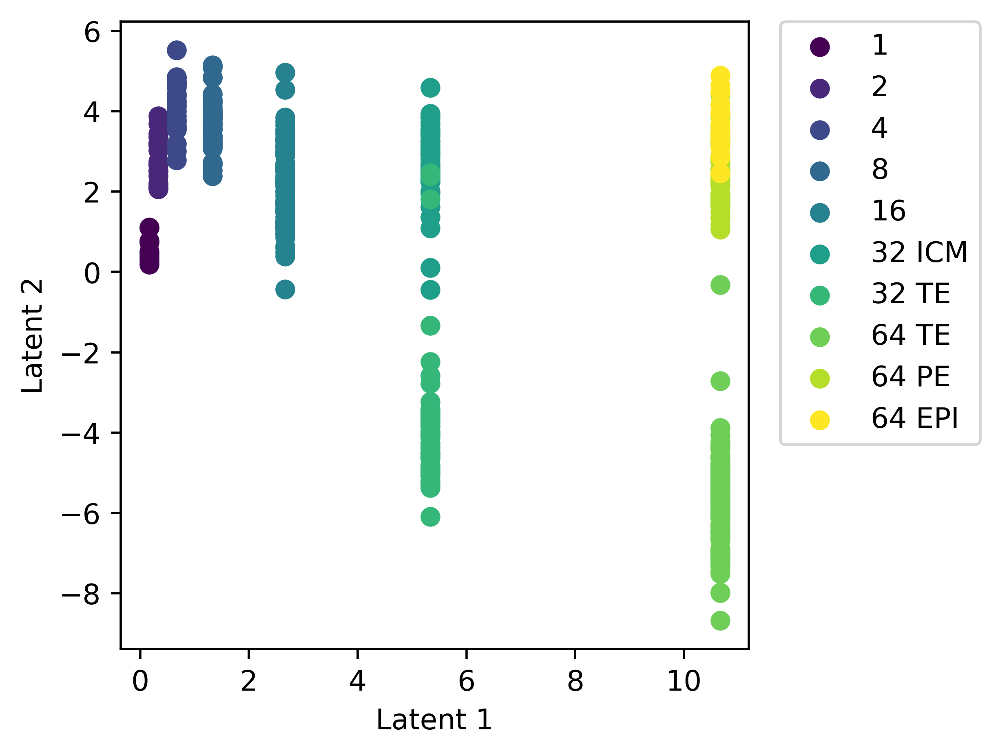
- Use the real time \(\mathbf{\tau} \in \mathbb{R}^{N}\) to initialise the first dimension of the latent variable: \[p(\mathbf{h}_{n,0}) =\mathbf{\tau}_{n,0}.\]
- Train the model by maximising the log marginal likelihood.
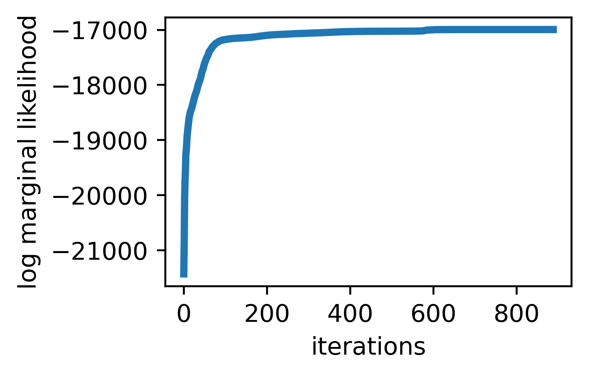
Psuedo-time in Cell lines
Psuedo-time in Cell lines
Motion Capture Data 1
- Each pose is represented by a 42 dimensional vector which consists of joint angles, and the position and orientation of the root of the kinematic chain.
- They then use a Gaussian process latent variable model to learn a low dimensional representation of the movement.
- This has applications in animation from creating poses for interactive characters to doing real-time motion capture with missing markers.
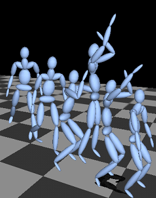
Motion Capture Data

Multi-output Gaussian Processes 1
- Multiple output functions \(\{y_p\}_{p=1}^P\).
- In this model, the latent variable Gaussian process is assumed to have observed input dimensions \(\boldsymbol{x} \in \mathbb{R}^{D_x}\) as well as unobserved one \(\boldsymbol{h} \in \mathbb{R}^{Q}\): \[ y_p(\boldsymbol{x}) = f(\boldsymbol{x}, \boldsymbol{h}_p) + \epsilon. \]
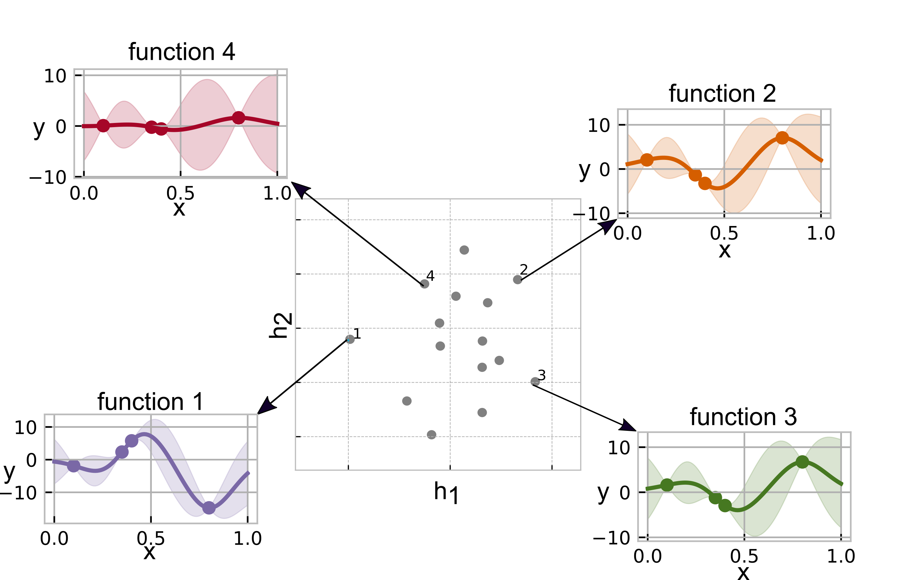
Multi-output Gaussian Processes
- This allows us to learn the correlation between different output functions, similar to the linear model of coregionalisation.
- This is useful for a range of applications including multi-fidelty and multi-task optimisation.
Multi-output Gaussian Processes for Transfer Learning 1
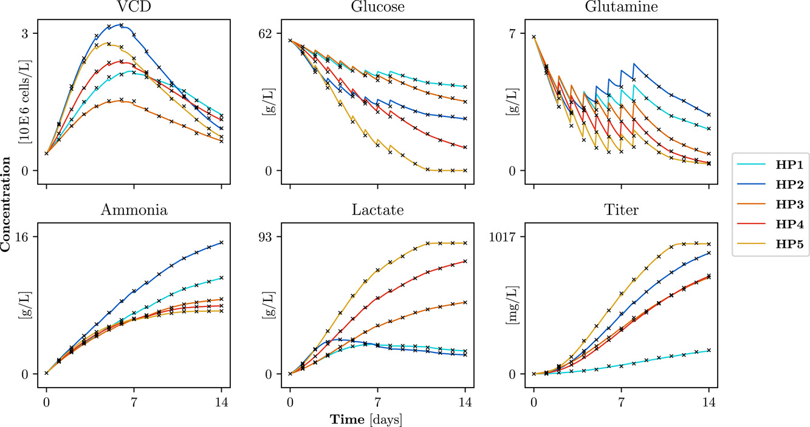
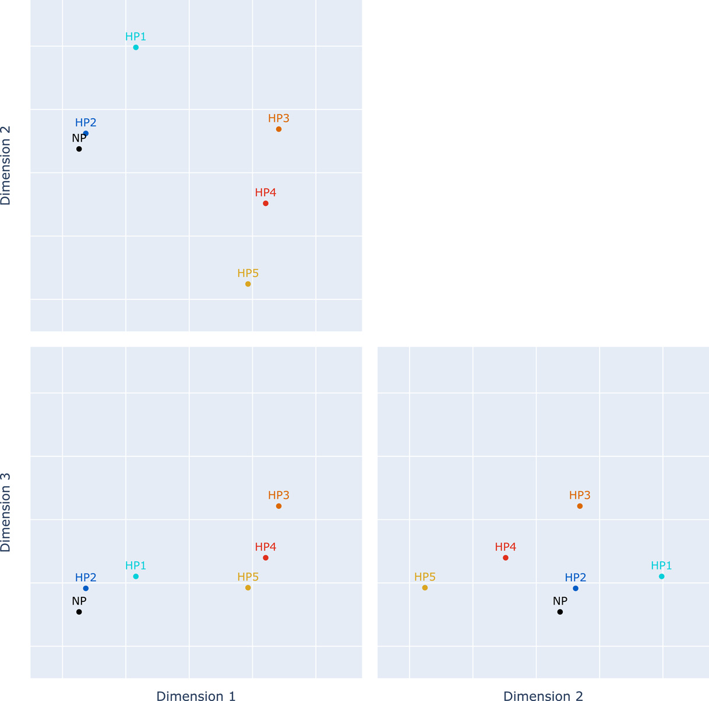
Summary
Gaussian processes can be used to learn low dimensional representations of high dimensional data.
Probabilistic Principal Component Analysis is equivalent to a Gaussian process latent variable model with a linear kernel.
This can be used for a wide range of applications such as grouping development stages in cell lines and determining latent dynamics of a system.
Useful References
- Lawrence, Neil, and Aapo Hyvärinen. Probabilistic non-linear principal component analysis with Gaussian process latent variable models. Journal of machine learning research 6.11 (2005).
- Titsias, Michalis, and Neil D. Lawrence. Bayesian Gaussian process latent variable model. Proceedings of the thirteenth international conference on artificial intelligence and statistics. JMLR Workshop and Conference Proceedings, 2010.
- Ahmed, Sumon, Magnus Rattray, and Alexis Boukouvalas. GrandPrix: scaling up the Bayesian GPLVM for single-cell data. Bioinformatics 35.1 (2019): 47-54.
- Grochow, Keith, et al. Style-based inverse kinematics. ACM SIGGRAPH 2004 Papers. 2004. 522-531.
- Dai, Zhenwen, Mauricio Álvarez, and Neil Lawrence. Efficient modeling of latent information in supervised learning using gaussian processes. Advances in Neural Information Processing Systems 30 (2017).
The end! And Some Useful Resources…
- Getting started with GPLVMs:
- Useful videos / slides:
My email: r.sedgwick19@imperial.ic.ac.uk